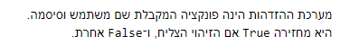

הפונקציה authenticate מקבלת רק שם משתמש וסיסמה, ולא מקבלת את מספר הנסיונות. האם היא מבחינתי רק פונקציית עזר כדי לבצע את התרגיל?
אם כן אז הדוגמאות שניתנות בחלק הזה של התרגיל מבלבלות, כי זה נראה כאילו הפונקציה authenticate יודעת גם באיזה מספר ניסיון אנחנו.
רשום במפורש שהיא מחזירה True אם הנסיון הצליח, ואם הנסיון נכשל היא מחזירה False.

מה שבאמת מבלבל, זה שאם אני קורא לה מהתוכנית הראשית כביכול, ושם מבצע ספירת נסיונות, אז אם אני מקבל ממנה ערך של False, אני לא יודע אם ה-False הוחזר אליי כי המשתמש לא נמצא, או כי הוא הזין סיסמא לא נכונה.
בגלל זה התרגיל מבלבל…
אשמח לתשובות ממנהלי הקורס, לקבל קצת יותר סדר לגבי הפונקציה הזו.
@Yam
תודה,
חגי
מה זה משנה אם השם משתמש נמצא או לא? אם הוא נמצא הוא עף מהבנק אחרי 3 ניסיונות כושלים, ואם לא אז תמשיך בהתנהגות הרגילה.
למען האמת זה מתחבר יופי עם איך שמערכת סבירה מתמודדת, המערכת לא אמורה בשום דרך להדליף לך אם משתמש קיים בה או לא (כאן זה כביכול יכתוב שהמשתמש עף מהבנק וככה אפשר לגרום נזק למישהו שאתה שונא, אבל בגדול מטרת המערכת כאן היא לתרגל אתכם בעבודה עם קבצים, פונקציות וכו ולא בכתיבת מערכות הזדהות, שלא דומה למה שמממשים כאן)
מה שאתם כן יכולים להניח זה שאם הוכנס שם משתמש מסוים ונעשו בו 2 טעויות, ולאחר מכן הוכנס אחר, אתם יכולים לאפס את מספר הניסיונות כשמוחלף שם המשתמש.
איתמר
2 לייקים
מה שמבלבל פה זה שמצד אחד אתם מבקשים שהפונקציה auth תקבל שם משתמש וססמה, ומצד שני כתוב שהמשתמש צריך להזין אותה ו3 נסיונות וכו’.
השאלה - האם הפונקציה מקבלת את הקלט מהמשתמש וסופרת את מספר הנסניונות או שמה שעוטף אותה מקבלת את הקלט
אוקי קראתי שוב :
אם הלקוח קיים, אך הסיסמה שהזין שגויה – יש ללקוח עוד 2 נסיונות להזין סיסמה נכונה.
זה אומר שאי אפשר להחליף לקוח לכן לא רלוונטי לאפשר את מספר הפעמים
@itamaraviv
כמה שאלות הבהרה:
- כרגיל, מותר לכתוב פונקציות עזר בנוסף ל - authenticate עצמה ?
- לאור הערה קודמת שלך:
האם המצב הבא אפשרי ?
authenticate(‘FreddieMercury’, ‘ILoveQueen’)
Wrong password (1/3).
authenticate(‘FreddieMercury’, ‘LetItBe’)
Wrong password (2/3).
authenticate(‘Simba’, ‘ILoveNala’)
Welcome ‘Simba’.
authenticate(‘FreddieMercury’, ‘HeyJude’)
Wrong password (1/3).
כאשר קובץ הסיסמאות הנתון הוא כמו בדוגמה במחברת:
FreddieMercury:61875
BBKing:33471
DonaldDuck:17743
Simba:6362
ז"א קריאה ל-authenticate עם שם משתמש אחר מאפסת את כל הנסיונות עבור קריאה קודמת עם שם משתמש שונה? (תחת ההנחה שעם שם המשתמש הקודם לא עברנו את 3 הנסיונות המותרים)
תודה רבה!
התשובה היא כן, זה בדיוק מה שמתואר. לגבי הוספת פונקציות, תוסיף כמה שאתה רוצה אבל תראה שאתה לא מגזים.
איתמר
אוקי @itamaraviv אז זה מעלה עוד שאלות מבחינתי:
-
ההדפסות המתוארות בדוגמה שלי כאן ובמחברת, הן הדפסות ש-authenticate עושה בנוסף ל- True/False שהיא מחזירה? או אלה הדפסות שמוצגות כתוצאה מפונ’ אחרת שמשתמשת בה?
-
האם במסגרת המטלה מותר לממש פונ’ אחרת המשתמשת ב authenticate, ושאותה פונ’ אחרת תמנה את מס’ הנסיונות שיש ללקוח להזין את הסיסמה?
- תחשוב לבד איפה הגיוני שיהיו ההדפסות מבחינת מה ש-authenticate עושה.
- הגבתי שמותר לך לממש פונקציות כאוות נפשך, רק תדאג להגיש את הכל ביחד
איתמר
היי איתמר,
בגדול בשביל לעשות סדר בתהליך עשיתי
פונקציה אשר בודקת אם המשתמש בכלל קיים במערכת ורק אם כן היא נכנסת איתו
ללופ הזה של לבקש ממנו סיסמא עד 3 פעמים.
בעצם אני לא מבקש ממנו להכניס כל פעם משתמש וסיסמא מחדש ברגע ששם המשתמש היה נכון.
ואז האופציה שפליקס תאר פה של להכניס בפעם השלישית פתאום של משתמש אחר עם סיסמא נכונה
בכלל לא אפשריים אצלי.
האם זה קריטי לשנות את זה לכך שזה כך פעם מבקש ממנו גם את שתיהן ?
גם אני מימשתי את הפונקציה בלי פרמטרים שהיא מקבלת , וכל ה"אינפוטים" מתבצעים בתוך הפונקציה.
מבחינת תפקוד , מתפקדת כמצופה
כלומר :
( )authenticate.
ככה הרבה יותר הגיוני.
אם מחייבים להכניס אליה סיסמה ושם משתמש , אז צריכים להעביר אליה גם מספר נסיונות שעברו , כלומר פרמטר שלישי , ובכל מקרה זה לא יהיה המבנה המתואר בשאלה.
עדיין לא ירדתי למשמעות הסופית של התרגיל, אבל כאשר עבור הפונ’ authenticate מוגדר בשאלה ספציפית מה היא צריכה לקבל (שני פרמטרים) ומה היא צריכה להחזיר (ערך בוליאני), אז לשנות אחד מהדברים האלה למשהו שונה מההגדרה נשמע כמו לפתור שאלה אחרת ממה שהתבקש במטלה 
מה שביקשו במטלה לא הגיוני . הסברתי למה …
אם רוצים פונקציה שתמנה נסיונות , אז אתה לפחות צריך להעביר אליה עוד פרמטר.
אז בכל מקרה זה לא שני פרמטרים.
אני מבין אותך לחלוטין, לכן הלבטים שלי בנוגע לשאלה הזו, ולכן לא ברור לי עד הסוף ניסוח השאלה.
נכון , ניסוח לא טוב - הם צריכים לשנות.
אצלי דווקא כן היא מקבלת את הפרמטרים ואינה קולטת בתוכה את האינפוטים.
אבל יחד עם זאת - במקרה שלי מגיעים אליה בהכרח שיש שם משתמש קיים במערכת.
זה עובד לי טוב אבל אני לא יודע אם זה כוונת המשורר (:
לייק 1
אני חושב שבגדול המבנה שהוצע הוא גם שגוי (כי בכל מקרה יצטרכו להעביר אליו פרמטר שלישי - מספר נסיונות) וגם “מכוער” כי במבנה שהוצע צריך לבקש שם משתמש וסיסמה מבחוץ , ואחר כך לעשות את אותה הפעולה בדיוק בתוך הפונקציה.
זה קוד רפיטטיבי ומיותר.
לכן ביצעתי הכל בתוך הפונקציה עצמה והיא לא מקבלת פרמטרים - זה קוד יותר נקי ונכון.
שלום לכולם,
אכן יש אי-בהירות לגבי מספר הנסיונות - אני ממליץ לעטוף את authenticate בפונקציה נוספת ובה לממש את מס’ הנסיונות ולהשאיר את authenticate לבצע את תפקידה.
אתקן את הניסוח בהתאם
איתמר
2 לייקים
כשאני חושב על זה , אפשר גם לעשות את מספר הנסיונות כמשתנה גלובלי.
לא. זה הרגל מאוד רע ואין סיבה לעקם את הנורמות הנכונות בשביל לעמוד בשאלה כלשונה.
מעדיף לתקן חוסר בהירות בשאלה ולהודות בטעות בניסוח מאשר שתסגלו לעצמכם הרגלים רעים.
איתמר
2 לייקים